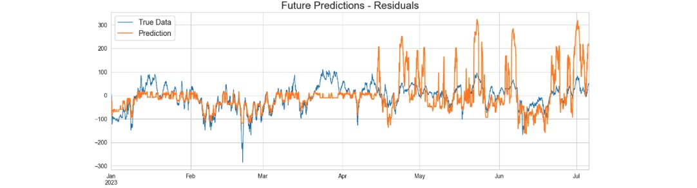

In this section, our focus is to train an XGBoost model for forecasting significant wave height time series. The corresponding code for this section can be accessed here. In our time series analysis in previous section, we decomposed the SWH time series into its components (trend, seasonality, and residuals) using STL model. We will apply machine learning to the stationary residuals, and then reconstruct the predictions by adding back the trend and seasonality components. This helps in isolationg the underlying patterns from the noise and variations.
Figure 1: Train and test split with a determined split date. The top image shows SWH time series before decomposition. The bottom image depicts the SWH residuals after removing its trend and seasonality components.
Contents
- Train and test split
- Time series cross validation splits
- Forecasting Horizon
- Feature Engineering
- XGBoost Model Training
- Prediction
- Model Evaluation
Train and Test Split
Splitting a time series dataset into train and test subsets requires careful consideration due to the time-based characteristics of the data. We choose "01/01/2023 00:00" as the boundary between the training and testing periods (figure 01). This test set will be employed to assess the model's performance and in this project we refer to it as "future" data. We'll train the model on the data before this division point using cross validation.
Time Series Cross Validation Splits
We employ the TimeSeriesSplit class from the sklearn library for our cross validation splits. With the TimeSeriesSplit class, we can specify the maximum training size and the number of desired splits. The class will then generate the necessary cross-validation partitions for us.
Figure 2: Train and test cross validations.
Forecasting Horizon
The forecast horizon refers to the specific time period into the future for which we are making predictions. The forecast horizon is an important parameter in time series forecasting, as it can impact the accuracy and reliability of our predictions. Longer forecast horizons might introduce more uncertainty and challenges, as it becomes harder to capture complex patterns and fluctuations the further into the future we try to predict. Our forecast horizon for this project is 3 months.
Feature Engineering
- Time Features We create new features for our model to help it learn better. We extract the time components from the Datetime index and save them as new features in the dataset. These new features include: hour, day, quarter, month, year, day of year, and week.
- Lag Features We also add some lag features which are a form of feature engineering. A lag feature represents the value of a variable at a certain number of time steps before the current time step. For example, in our hourly SWH data we incorporate the SWH values for the previous year at the same time. As a result, our time step would be 24 times 365 hours in the past. The reason behind selecting this lag is rooted in the relative positions of the moon, earth, and sun has an impact on the tides, thereby affecting waves characteristics and their heights. After some trial and error we used 2 lags for our dataset: 1 year, and 2 years.
XGBoost Model Training
Combining all together, we have a stationary time series with new time and lag features added to it. Our cross-validation framework is also established.
We will proceed by iteratively looping through the cross-validation folds to train our XGBoost model. In each iteration, we will evaluate the model's performance
by computing the root mean squared error, and these scores will be stored in a designated list for every fold. We calculate the average score from all the folds,
which then serves as the final evaluation metric for this model. The average score we got for this model using cross validation is about 36.73. We will provide
a more detailed explanation of this evaluation in the subsequent "Model Evaluation" section.
Figure 3: Feature importance per XGBoost model.
Prediction
The test set that we initially set aside from the data, referred to as "future data," serves as an excellent representative dataset for evaluating
the performance of our model. Crucially, our model did not encounter this data during its training phase. We use the model to generate SWH forecasts
for this dataset, which represent the timeframe after 01/01/2023 00:00. It's important to note that when making predictions, we must concatenate the future/test data and
the training set, then recalculate the lags features.
Figure 4: Reconstructed SWH prediction after adding back the trend and seasonality components.

Figure 5: Stationary residual prediction.
Figure 6: Predicted values on the Original SWH.
Model Evaluation
To assess the effectiveness of this model, we employed the Mean Squared Error (MSE) as our evaluation metric. It's noteworthy that the entire future dataset we predicted is a span of around 6 months, even though our forecast horizon was 3 months. The computed MSE for the 6-month period stands at 64.11, while the MSE for the 3-month forecast period is 37.20. These calculations underscore the observation that as we extend further into the future, it becomes more challenging to predict accurately.
Additionally, to set up a baseline for our error rate assessment, we conducted a comparison by generating predictions using values imported from the previous year for the same 3-month period. This baseline MSE error is 188.86 and our ML model performed a much better prediction with MSE of 37.20.
GitHub Python Code